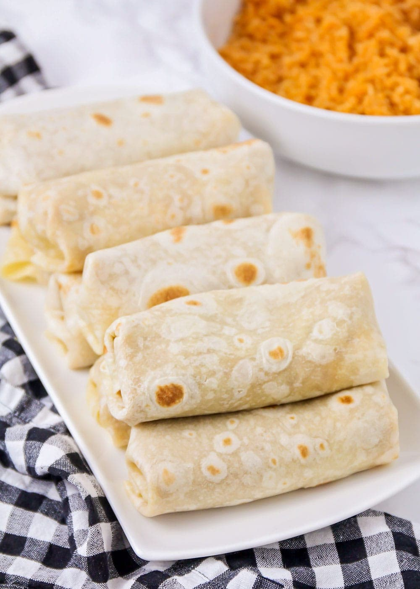

Bean burrito

Description
Cheesy bean burritos are so easy to whip up for dinner! These are perfect for making ahead of time, or freezing for later.
Ingredients
Filling
- 1 30 oz can refried beans
- 1/4 cup Crisco shortening
- 1/3 cup milk
- 1 cup shredded cheddar cheese
- 1 teaspoon taco seasoning
Assembling
- 12 uncooked soft taco size flour tortillas
- 1 1/2 cup shredded cheddar cheese
Steps
- Add the beans, shortening, and milk to a medium sauce pan and heat over medium heat, stirring frequently, until smooth. Stir in the cheddar cheese and taco seasoning.
- Cook the flour tortillas according to the package directions. Keep warm in a towel until ready to use.
- To assemble the burritos, add ⅓ cup of beans to the center of a tortilla, then sprinkle with 2 tablespoons cheddar cheese. Fold in the edges of the tortilla toward the center, then roll up, tucking in all of the filling.
- To refrigerate or freeze for later, wrap each burrito in plastic wrap. Refrigerate for up to a week, or place in a freezer-safe container and freeze for up to six months. When ready to reheat, unwrap the plastic wrap, wrap the burrito in a paper towel, and microwave for 1-2 minutes, until heated through.